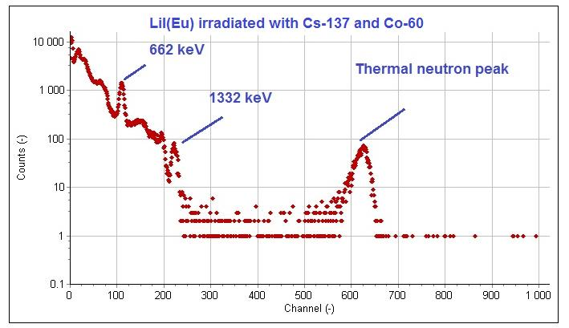
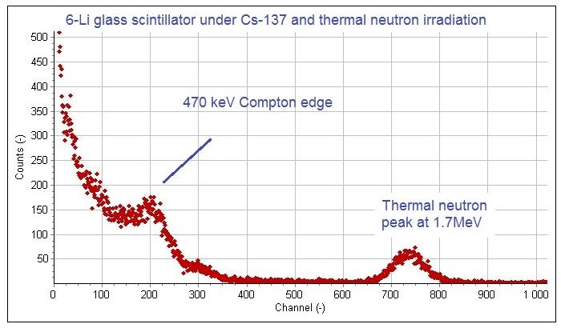
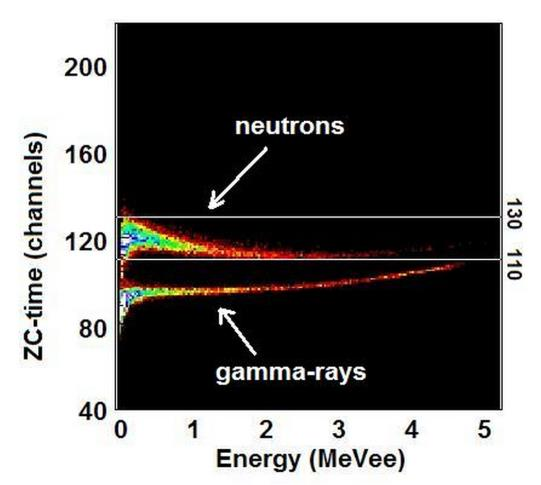

Neutrons do not produce ionization directly in a scintillator. They produce scintillation light only after a nuclear reaction with a target nucleus releases charged secondary particles, which then ionize the scintillator and produce scintillation in the same way a charged particle from any other source would. The choice of target nucleus and the detection-scintillator combination drive most of the design choices in neutron-detector engineering.
This chapter covers thermal neutron detection (neutron energies below about 0.5 eV, where capture cross-sections are highest). Fast neutron detection by elastic scattering on hydrogen, the dominant approach for higher-energy neutron measurements, is touched on briefly here and covered in more depth in Chapter 9 (electronics for PSD) and Appendix A (advanced materials).
Thermal neutrons interact with most nuclei only weakly. The few nuclei with large thermal-neutron capture cross-sections suitable for detection are: 6Li (about 940 barns), 10B (about 3840 barns), 3He (about 5330 barns), and 157Gd (about 254,000 barns). Each capture produces a different set of secondary particles, with different scintillator-design implications.
The 6Li reaction is the dominant choice for scintillator-based thermal neutron detection because the alpha and triton deposit all their energy locally, the secondary particles are charged, and 6Li can be incorporated into multiple scintillator host materials.
6LiI(Eu) - europium-doped lithium iodide, isotopically enriched in 6Li. Light yield about 35 percent of NaI(Tl) for gamma reference. Decay time 1.4 microseconds. Hygroscopic. The thermal neutron capture event produces a light pulse equivalent to roughly 4.1 MeV gamma in NaI(Tl), well above natural gamma background, which means simple energy thresholding above 3 MeV separates neutrons from gamma. 90 percent of thermal neutrons absorb in 3 mm of material. Crystals are grown to about 25 mm diameter. Used as a thermal neutron spectrometer in older instruments and in some current physics applications.
6Li-glass (GS-20 and equivalents) - cerium-activated lithium silicate glass with 6Li enrichment. Light yield is much lower than 6LiI(Eu), around 4 to 6 percent of NaI(Tl), so the neutron peak is broader and falls at gamma-equivalent energy around 1.6 MeV. Non-hygroscopic, mechanically robust, can be cast in arbitrary shapes including thin sheets and arrays. 90 percent thermal neutron absorption in 1 mm of material. The standard format for large-area thermal neutron detectors and for fiber-coupled detector arrays.
6LiF/ZnS(Ag) screens - a composite detector formed by mixing fine powder of 6LiF with ZnS:Ag scintillator powder, bonded into a thin layer (typically 0.2 to 1 mm thick). The 6Li capture produces alpha and triton in the LiF; these particles travel a few microns into adjacent ZnS:Ag particles and produce intense scintillation. ZnS:Ag has very high light yield for charged particles, so the thermal neutron signal is bright. The scintillation light is read out either directly with a PMT or, for large-area detectors, through a wavelength-shifting fiber array that re-emits the light at a longer wavelength matched to the photodetector. ZnS:Ag is opaque to its own emission, which limits practical layer thicknesses, but the technique scales to very large areas. Used in neutron portal monitors and in neutron-imaging detectors.



The elpasolite scintillators (CLYC, CLLB, CLLBC, all introduced in Chapter 3) detect thermal neutrons through the 6Li content of the crystal lattice and gamma rays through standard photoelectric and Compton interactions in the same crystal volume. The two event types produce different scintillation pulse shapes because the alpha and triton from neutron capture have much higher linear energy transfer than the photoelectrons and Compton electrons from gamma interactions. Pulse shape discrimination separates the two populations in real time on a digital pulse processor, producing simultaneous gamma spectra and neutron counts from a single detector.
This is the dominant approach for handheld dual-mode radiation detectors used in homeland security and law enforcement, where a single small detector that gives both a gamma spectrum (for isotope identification) and a thermal neutron count (for shielded special nuclear material detection) replaces what previously needed two separate detectors.
The trade-offs of the elpasolite approach are: lower thermal neutron detection efficiency per unit volume than dedicated neutron detectors (because most of the crystal volume is not 6Li); the energy resolution and absolute count rates do not match dedicated single-purpose instruments; and the materials are hygroscopic, which complicates packaging.

Boron-loaded plastic and liquid scintillators offer an alternative to 6Li-based detection. The 10B(n, alpha)7Li reaction has a higher cross-section than 6Li(n, alpha)3H, but the secondary particles deposit only about 2.3 MeV instead of 4.78 MeV, and the 478 keV gamma from the excited 7Li produces a degraded energy signature. Boron-loaded detectors are used where the cost or scalability of plastic or liquid wins over the energy resolution of 6Li, particularly in large-area portal monitors and in physics experiments with very large active volumes.
Gadolinium-loaded scintillators are uncommon as commercial detectors. The 8 MeV gamma cascade from 157Gd(n, gamma) is easy to detect but does not produce a localized energy deposit suitable for traditional thermal neutron spectroscopy. Gadolinium loading is more common in liquid scintillator neutrino detectors (where the gadolinium-tagged cascade is used as a delayed-coincidence signature for inverse beta decay) than in routine neutron-detection instruments.


In any combined gamma-neutron environment, the detector must distinguish the two populations cleanly. The technique is pulse shape discrimination (PSD): exploiting the different scintillation pulse shapes produced by high-LET (alpha, triton) and low-LET (electron) ionization tracks.
The classical PSD figure of merit is:
FoM = | mu_n - mu_g | / (FWHM_n + FWHM_g)
where mu_n and mu_g are the centroids of the neutron and gamma distributions in some PSD parameter (typically the ratio of fast to total integrated charge), and FWHM_n and FWHM_g are the widths of those distributions. FoM above 1.5 gives clean separation in practice; modern elpasolite and PSD-plastic detectors achieve FoM above 3 in the gamma-equivalent energy regions where most events occur.
PSD is implemented either as analog charge-comparison (two integrating gates of different lengths, ratio of one to the other) or as digital pulse-shape analysis on a sampled waveform. Digital implementations dominate modern instruments because they allow event-by-event characterization, real-time histogram display, and post-acquisition reanalysis if PSD parameters need adjustment.
Going Deeper - PSD with charge-comparison and machine learning
The standard PSD parameter is Q_tail / Q_total, where Q_tail is the integrated charge in a time window after the prompt peak and Q_total is the integrated charge over the full pulse. The ratio is larger for high-LET events because of the relatively stronger slow component. Optimization of the gate boundaries is application-specific and usually done with calibration runs against pure-gamma and pure-neutron sources.
Recent SCINT and IEEE NSS papers report on machine-learning approaches to PSD, particularly convolutional neural networks operating on full digitized waveforms. Reported FoMs are slightly better than the best charge-comparison implementations, with the cost of less interpretable decision boundaries. For applications where calibration must be auditable and explainable, charge-comparison remains the standard.
For most of the period from 1990 to about 2008, thermal neutron detection in homeland security and physics applications was dominated by helium-3 proportional counters. He-3 is a gas-filled detector technology, not a scintillator, and its inclusion in this chapter is to explain why scintillator-based neutron detection has grown so much.
He-3 is a non-renewable byproduct of tritium decay. The principal supply came from US defense stockpiles, with the supply rate set by tritium-handling activities. Around 2008 the US He-3 stockpile drew down faster than expected because of homeland-security demand following the 9/11 era. By 2009 the supply had constricted to the point where new neutron portal monitor deployments could not be filled with He-3 detectors, and the radiation-detection industry had to find alternatives.
The alternatives that emerged: 6LiF/ZnS(Ag) screen detectors for large-area portal monitoring (cheap, scalable, but lower count rate capability than He-3); boron-coated proportional tubes (B-10 lining the inside of an Ar-CO2 proportional counter, geometrically equivalent to He-3 but with different gas requirements); CLYC and CLLBC for handheld combined gamma-neutron use; and PSD-capable plastic and liquid scintillators for fast neutron measurement. By 2025 the radiation-detection industry has substantially shifted to these alternatives. He-3 is still used where its specific advantages (very high efficiency, low gamma sensitivity, robust energy threshold) are required, but it is no longer the default.
The He-3 story matters for the engineer designing in 2026 because the lessons of supply-chain fragility apply to several of the new scintillator materials. Helium-3 was a single-source commodity. Several of the rare-earth-bearing scintillators (LaBr3:Ce, CeBr3, GAGG:Ce, LSO:Ce) depend on supply chains for europium, cerium, lanthanum, lutetium, and gadolinium that are concentrated in a small number of countries. Material-substitution flexibility, multi-source qualification, and inventory planning are part of detector engineering now in a way they were not in 2010.
BNC in Practice - When neutron count is what matters
In a security application, neutron sensitivity is often the binding requirement, not gamma resolution. A clean fingerprint of fissile material is a neutron count that exceeds background, regardless of whether the detector resolves the U-235 line at 185.7 keV cleanly. For these jobs, a CLLBC handheld will often beat a higher-resolution gamma-only handheld because the CLLBC also delivers thermal neutron counts. A 6LiF/ZnS(Ag) screen detector will deliver large-area thermal neutron sensitivity at lower cost. The right answer depends on whether the application is identification (what isotope) or screening (is anything there). Specifying for the wrong objective is the most common mistake in this corner of the catalog.
The neutron-detection chapter ends differently than it started. In the first edition of this book, He-3 was the assumed default for thermal neutron detection in serious applications, with scintillator alternatives positioned as fallbacks. By 2026 the scintillator alternatives are the standard, and a 6Li-based detector is rarely viewed as a compromise. The shift took fifteen years. The next supply disruption, when it comes, will not be in helium-3, because the field has already moved on. It will be in something else. The lesson is not which material to stockpile. It is to design for material substitution from the start.
Take it interactively. The quiz lives on its own page. Pick one answer per question, then check your score. Auto-scored, and your answers are saved on this device. About 10 minutes.
Or read the questions and answers inline below (preserved for print and offline use).
[1] R. T. Kouzes et al., "Neutron detection alternatives to 3He for national security applications," Nucl. Instrum. Methods A, vol. 623, pp. 1035-1045, 2010.
[2] N. Zaitseva et al., "Plastic scintillators with efficient neutron/gamma pulse shape discrimination," Nucl. Instrum. Methods A, vol. 668, pp. 88-93, 2012.
[3] J. Glodo et al., "Selected properties of Cs2LiYCl6, Cs2LiLaCl6, and Cs2LiLaBr6 scintillators," IEEE Trans. Nucl. Sci., vol. 58, no. 1, pp. 333-338, 2011.
[4] M. Kapusta et al., "Properties of CLLBC scintillator: A combined gamma and neutron detector," in Proc. IEEE NSS-MIC 2023, Vancouver, 2023.
[5] G. F. Knoll, Radiation Detection and Measurement, 4th ed. Hoboken, NJ: Wiley, 2010.
[6] R. T. Kouzes, "The 3He supply problem," PNNL-18388, Pacific Northwest National Laboratory, Apr. 2009.